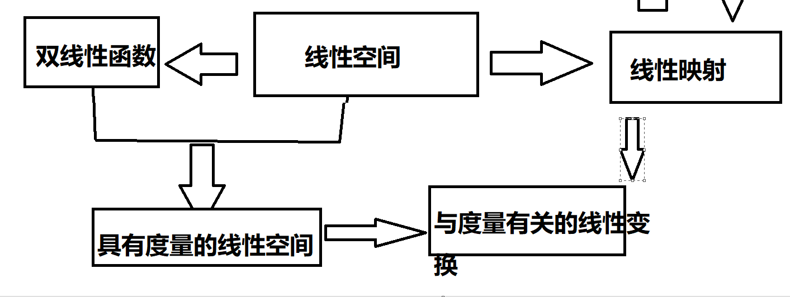
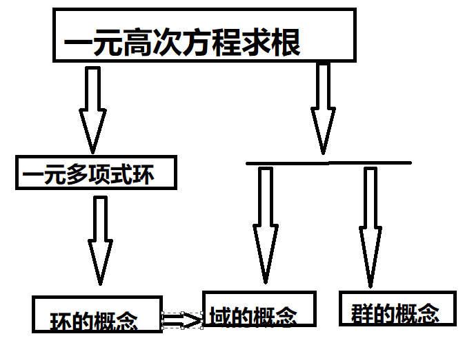

高等代数的研究对象
tag: 线性代数 是我自学线性代数的笔记，视频课程是 b 站上北大教授丘维声讲授的。笔记内容较为凌乱，我的目的是给我自己看，所以内容仅供参考，有什么问题欢迎在底部评论提出！
一元高次方程
一个未知量，次数无限大，研究方程的根是如何，以及有没有求根公式。这是经典代数研究的中心问题。
n 元一次方程组
举例：以下是四个方程的三元一次方程组。
借用平面解析几何的思想，把关于 x, y 的一次关系称为线性关系，那么 n 元一次方程组又叫n 元线性方程组。
n 元线性方程组的表示方法：
左侧都是未知量，右侧都是常量。
解法，消元法：都会，不必说。
其本质是系数做加减和倍数运算，那我们可以省略未知量
矩阵
以上一个三元方程组为例，其系数构成的矩阵如下。
纵为列，横为行，构成 4 行 4 列的 4x4 的矩阵，简称 4 级矩阵。
那么 s 行，n 列，有 s*n 个数排成 s 行 n 列的表，就是一个s*n 矩阵。
其中每个数称为这个矩阵的一个元素，第 i 行与第 j 列交叉位置的元素称为矩阵的(i,j)元。
如果矩阵的(i,j)元是$a{ij}
如果一个矩阵的行数和列数相等，则称它为方阵。m 行 m 列的方阵称为*m 级矩阵。
矩阵可用大写字母表示，如矩阵 A。A 为方程(1)的系数组成的，叫做(1)的系数矩阵。
B 由方程（1）的系数和常数组成构成 s*(n+1)矩阵，叫做（1）的增广矩阵，其对我们求解有很大的作用，接着就会讲解法。
总之，高等代数的研究对象的出发点就是n 元线性方程组，解法就是矩阵。
那么，解有哪些情况呢？可以再次借助平面几何的思想，两个直线相交有唯一的交点，也就是一个解。平行无交点，重合无穷多个交点。
n 元，n 维，n 维向量
一元是线，二元是平面，三元是空间，四元是时空，对应着一维，二维，三维，四维。
那么五维又是什么概念呢？要想理解五维及更高维度，我们可以研究线性方程中解的情况的判别。
以系数矩阵 A 为例当 n 为 2 时，两个数字组成了二元有序数组，就是平面向量的坐标。
n 为 3，n 为 4，同理。那么我们可以扩展到 n 维，成为 n 维向量，引入运算法则（加法、运算律、数乘、零向量、反向量）构成 n 维向量空间。
这样我们就可以研究解情况的判别和解集的结构了。
进一步，结合 n 维向量空间的性质抽象出了线性空间的概念。高维的概念可以投影到线性空间中，叫做线性映射。
只有加法和数乘的线性空间并不能涵盖向量的所有特性，例如，长度，方向，两个向量的夹角。要想将度量介入其中，可引入内积。
内积
高中我们已经了解了他的定义式
两个向量的内积是一个数，所以内积是一个二元函数，也称为双线性函数。
借助内积，线性空间称为了具有度量的线性空间。
- 欧几里得空间：实数域，具有度量的线性空间。有限维，例如三维空间。
- 酉空间：复数域，具有度量的线性空间。
- …还有其他空间
空间到自身的线性映射（投影）叫线性变换。
- 欧几里得空间：正交变换，对称变换
- 酉空间：酉变换，Hermite 变换
- ..还有其他变换
线性代数的主线是研究线性空间和线性映射。
一元高次方程的求根
$anx^n+a{n-1}+\cdots+a_1x+a_0=0$
以一元二次方程为例，我们的获得求根公式的方法是配方，也可以因式分解。
所以左侧的一元多项式（一元多项式环）要进行因式分解，就要研究一元多项式的结构。

伽罗瓦证明了五次和五次以上的方程没有求根公式，同时也提出了有根式解的充分必要条件是此方程的群是可解群。他的理论还引进了域的概念和群的概念，让代数学的研究对象发生了革命性的变革，经典代数研究一元高次方程的求根，现代近似代数学（抽象代数学）研究环、域、群系统的结构以及三者保持运算的映射。
我们不去研究抽象代数的具体内容（幸好不学），只是引入了环群域的概念。
高等代数研究对象的第二部分就是一元或 n 元多项式环的结构和通用性质。
学习方法
数学思维的思维方式
- 观察客观现象（纷繁复杂）：联系生活，提出问题，研究问题。
- 抓住主要特征：抽象出概念，建立模型。（概念非常多）
- 探索结构：应用直觉，几何（可以看 3b1b 的视频），类比，归纳，联想，推理。
- 猜测可能有的规律
- 认证：深入分析，运用定义，公理，已经证明的定理进行逻辑推理。（地狱难度）
- 揭示事物的内在规律（井然有序）